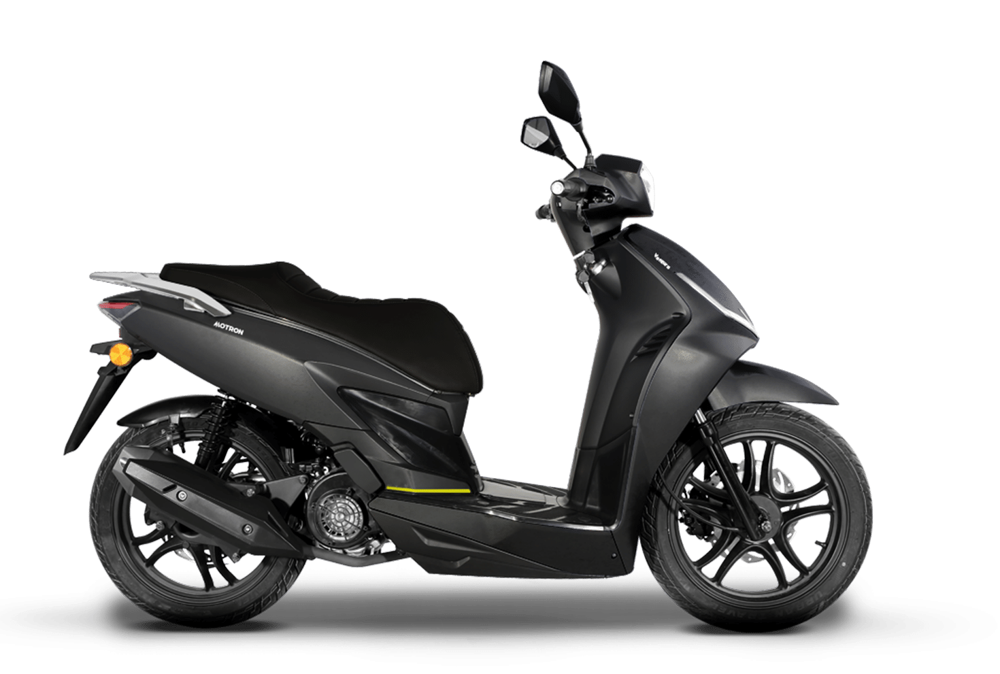
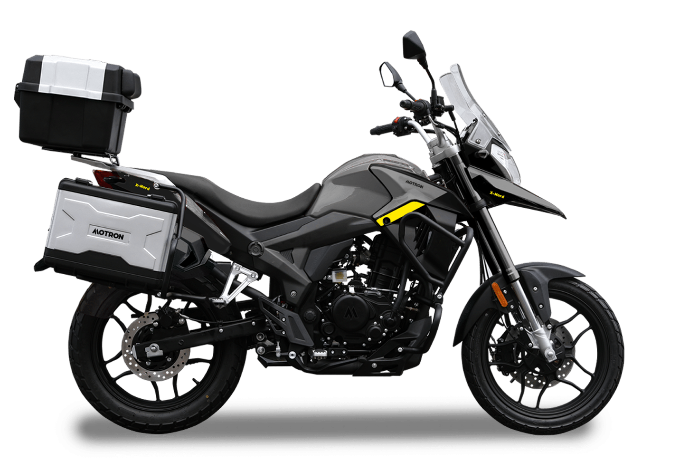
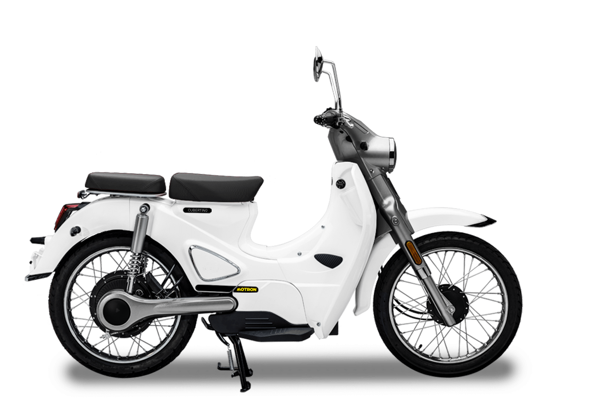
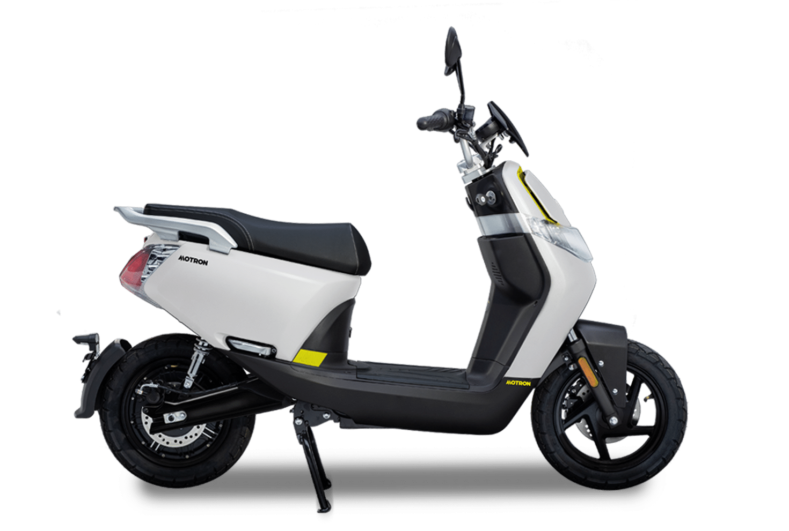
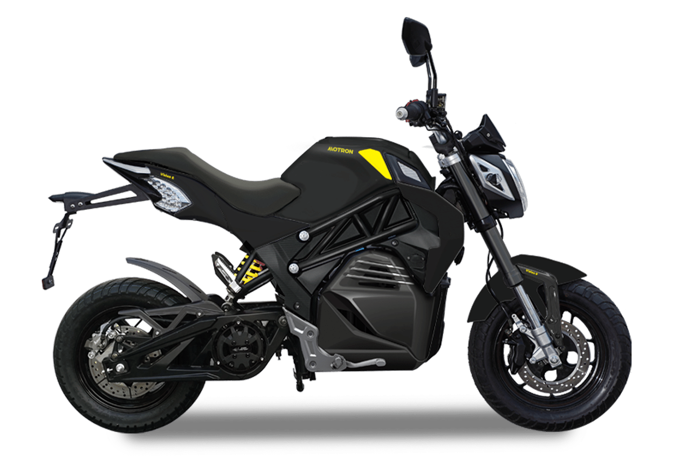
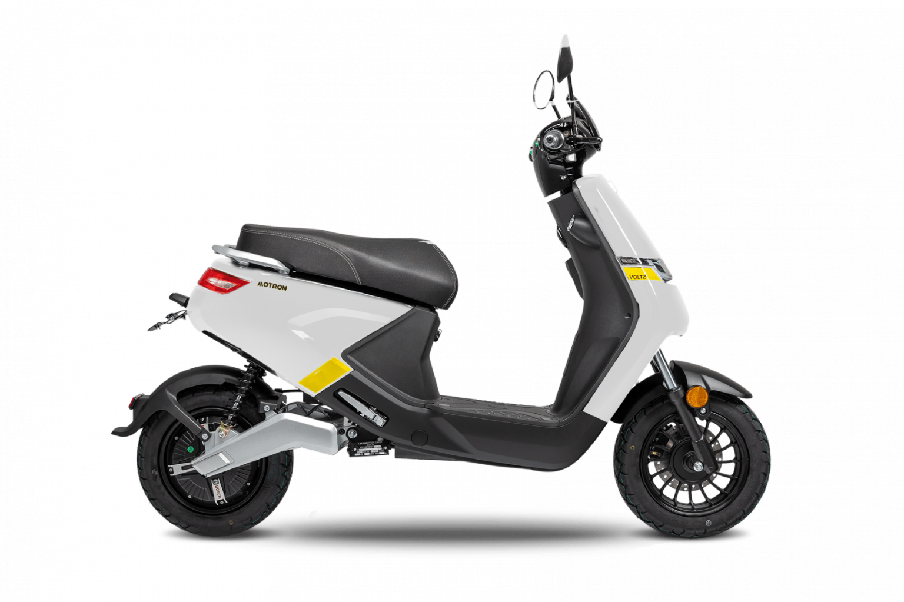

BREEZY 50
Abbandona i mezzi pubblici per una scarica di adrenalina, con il Breezy 50, raffreddato ad aria e a
basse emissioni. Niente più attese. Sfreccia nel traffico e vai dove vuoi, quando vuoi.

IDEO 50
Un omaggio alle icone dello scooter italiano – l’Ideo 50 è proprio divertente
da guidare. Offre un look classico, un design senza tempo e prestazioni imbattibili per il suo prezzo. Se hai bisogno di un motivo per non rimanere mai a casa, eccolo.

IDEO 125
Con un motore più potente rispetto al suo fratellino minore, ma con le stesse caratteristiche retrò, l’Ideo 125 è
perfetto sia per le strade urbane sia per quelle extraurbane.
È l’ideale per te che vuoi esplorare il mondo oltre la porta di casa. Quindi sali in sella al tuo Motron e raggiungi la destinazione, velocemente.

ventura 125
È ora di smuovere le acque. Con le sue linee scattanti, i suoi pneumatici potenziati da 16″ e il suo motore da 125cc, il Ventura 125 rende rapidi i tuoi spostamenti sia sulle strade extraurbane che sulle vie acciottolate della città. Quindi, se vuoi andare dove c’è il divertimento, questo bolide ti ci porta in tempo.

x-Nord 125
La X-Nord 125 è l’antidoto al sentirsi bloccati in casa. Costruita con un telaio aggressivo e moderno, ti sfida a scappare lungo le strade di città o di campagna ogni volta che ne hai la possibilità. Ovunque andrai, non sprecherai più un altro fine settimana.

Revolver 125
Puoi essere un semplice passeggero nella vita, o puoi scegliere di essere il pilota. E con il suo design retrò, la Revolver 125 è una cruiser urbana fatta per sfrecciare. Basta caricare il serbatoio e prendere la mira per andare ovunque tu voglia essere.

Cubertino
Il design retrò senza compromessi incontra la potenza elettrica del 21° secolo. Con il suo motore da 1500W, puoi contare su Cubertino ogni volta che hai bisogno di muoverti attraverso tutta la città. E con i suoi 56 km di autonomia, riuscirai a tornare a casa sano e salvo

Whizz
Dimentica i viaggi insignificanti: Whizz rende elettrizzanti i viaggi di tutti i giorni. Con il suo motore Bosch da 2000W e la batteria agli ioni di litio rimovibile, Whizz ha la potenza e la maneggevolezza per sbloccare anche le città più congestionate. Ritrova il divertimento sulla strada.

Vizion
La Vizion ti fa entrare nel vivo dell’azione. Grazie al suo assetto aggressivo da corsa, non esistono viaggi noiosi. E con il suo motore Bosch da 3700W, puoi contare sulla potenza necessaria per sfrecciare attraverso la città.

Voltz
Con un motore Bosch da 2000W e batterie Samsung rimovibili, Voltz ti assicura che non dovrai mai più fare affidamento sui mezzi pubblici. Con un’autonomia di 49 km, sufficiente a dominare qualsiasi città, le tue avventure urbane possono prendere tutte le svolte che vuoi.
per maggiori informazioni consultare il numero:+39 3496496238
seguimi su:
instagram:
facebook:
whatsApp: